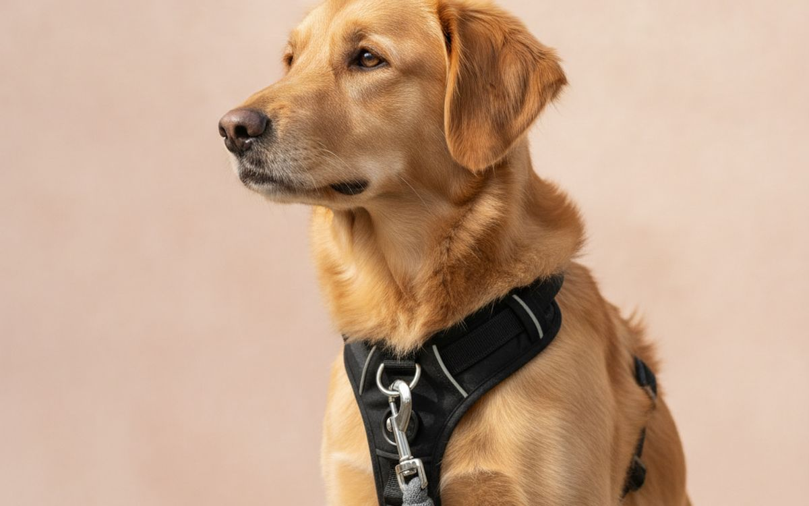
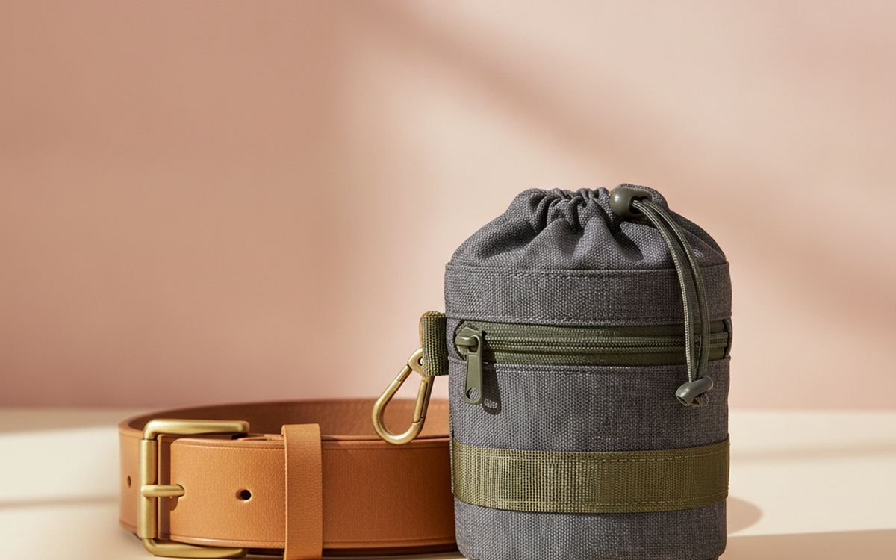
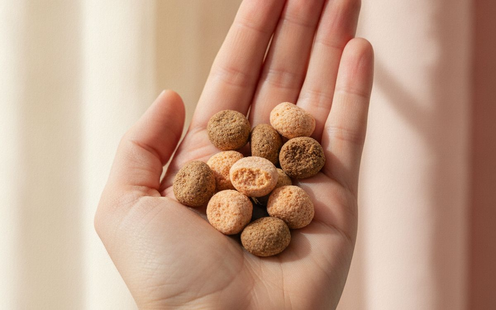
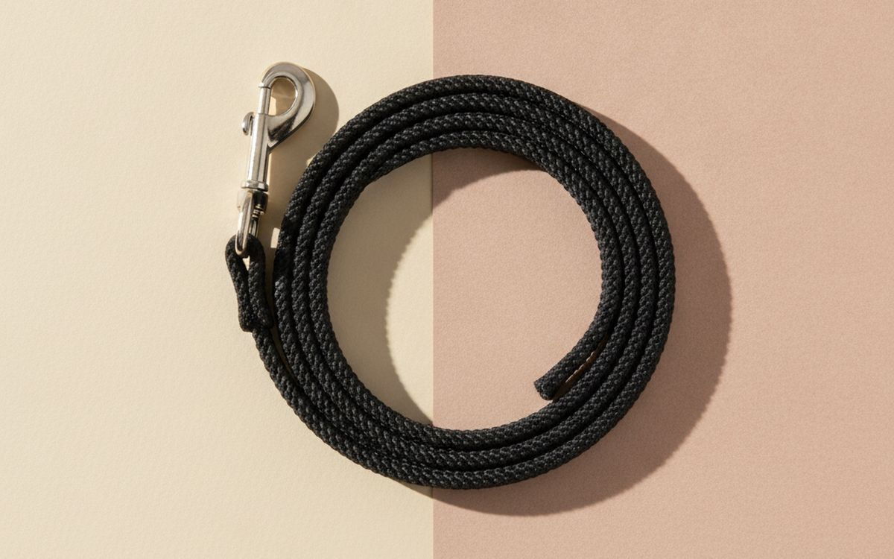
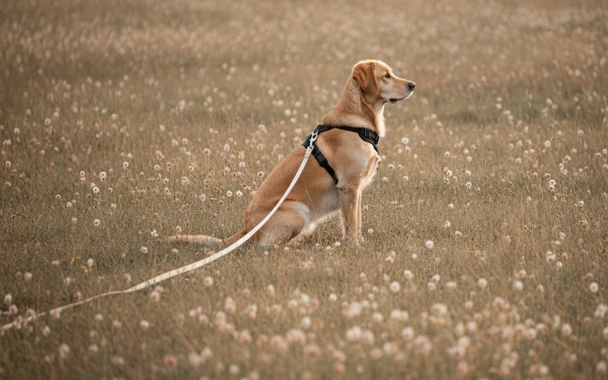
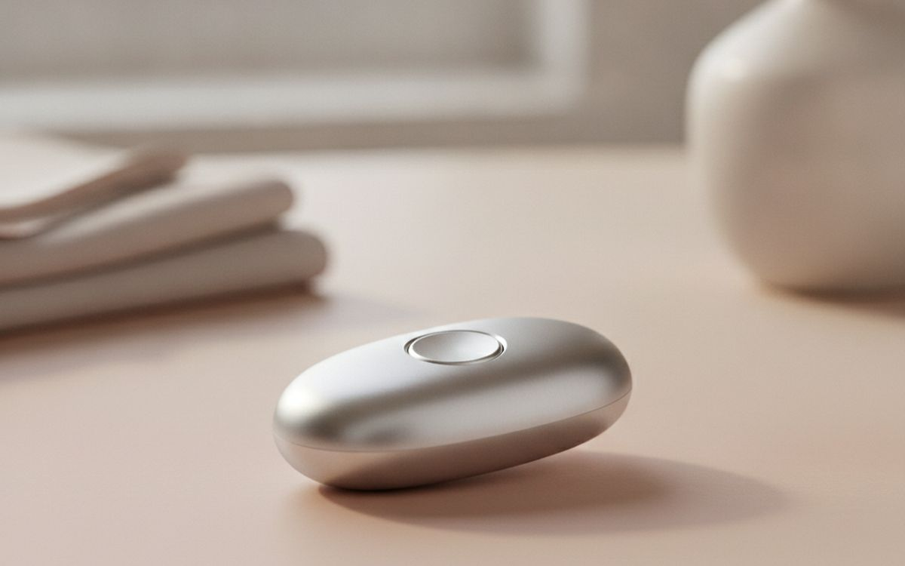
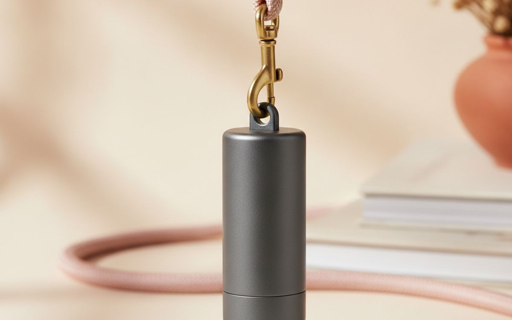
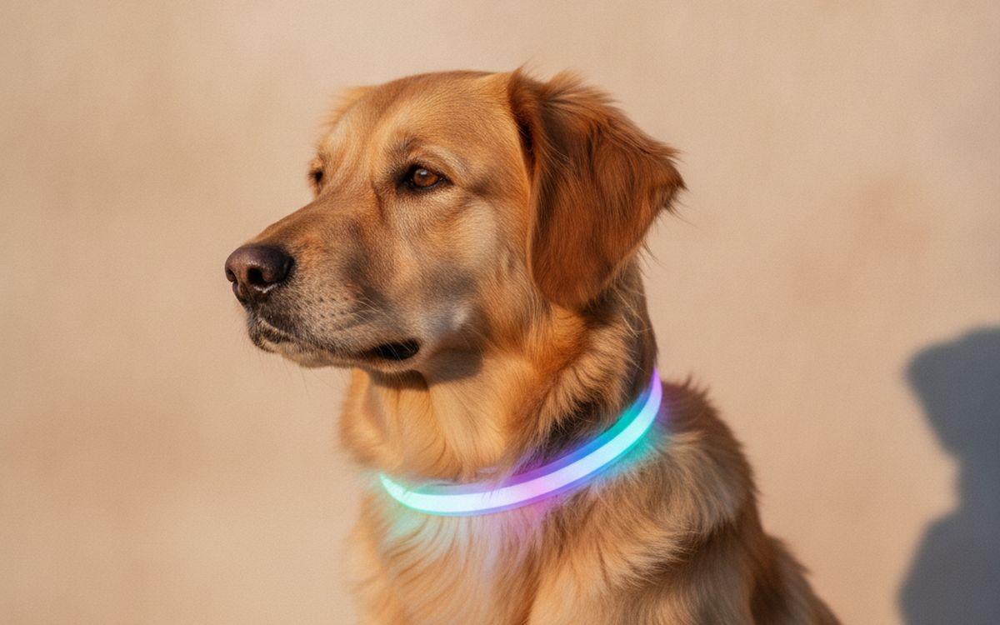
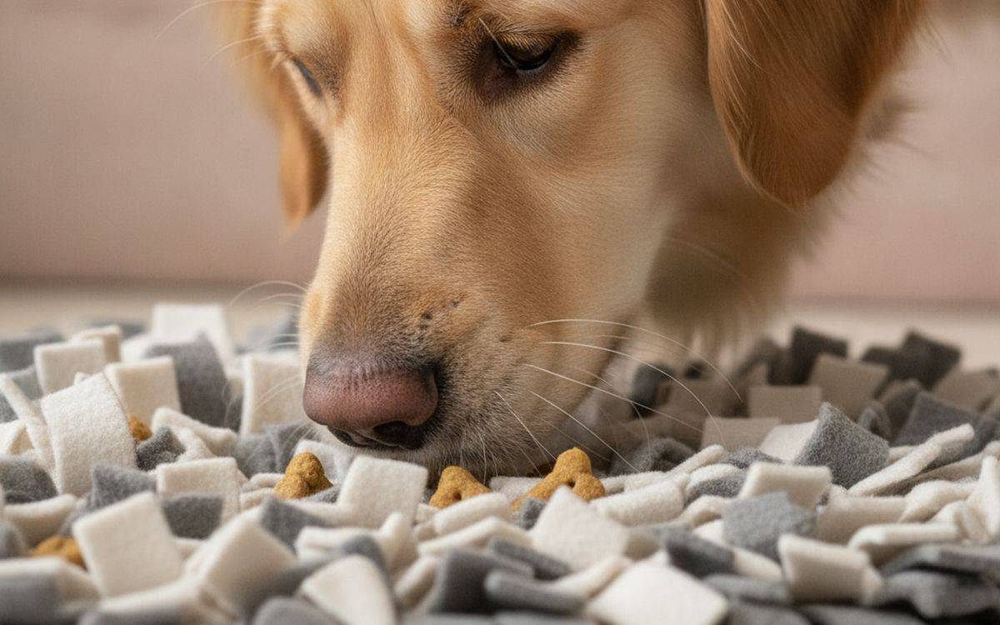
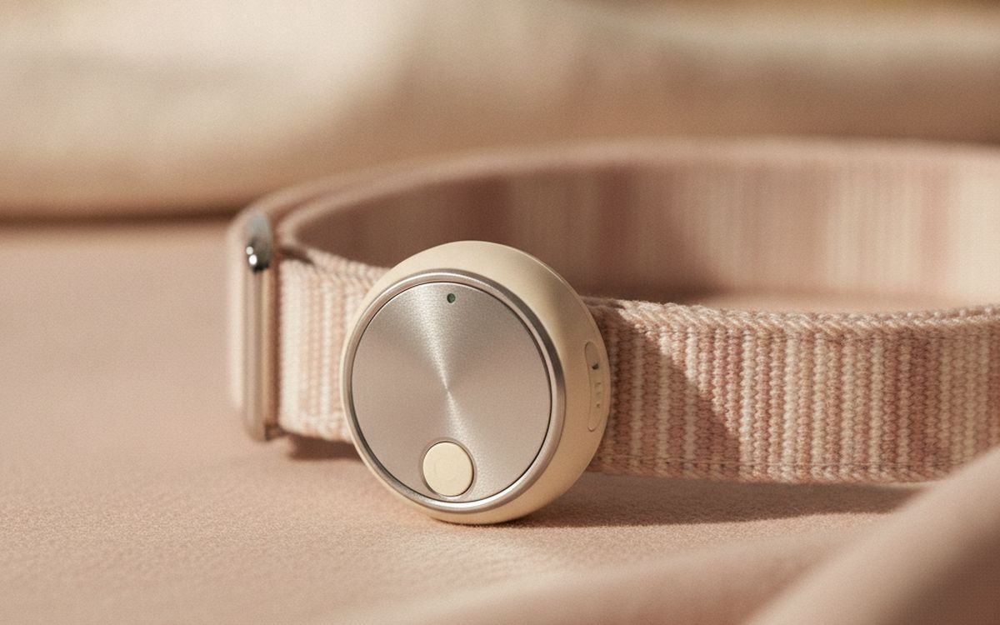

A dog that pulls on the lead, ignores recall and lunges at other dogs makes every walk stressful. The pet aisle offers many quick fixes, but training still comes down to two things: rewarding the behaviour you want at the right moment, and using equipment that does not make things worse.
This list is ordered by what helps most day to day. A good harness and a treat pouch come first. Aversive tools like prong and shock collars are not here; veterinary behaviour groups advise against them, and reward-based training works better long term.
Prices below are approximate street prices at the time of writing and move around constantly, especially during sale events. Treat them as a rough band for budgeting, not a quote. Always check the live listing before you buy.
En bref
A front-clip harness
The quickest help with pulling
Transparence. Les liens de cette page sont des liens affiliés. Si vous achetez via l’un d’eux, nous pouvons percevoir une commission sans surcoût pour vous. Cela n’influence ni le contenu de cette liste ni son ordre.
Comment nous avons choisi
These picks come from veterinary behaviour guidance, certified trainers' advice and long-run owner reports, cross-checked against current retail listings. We have not personally tested every item here. For aggression or serious fear, work with a qualified behaviourist or your vet.
En un coup d’œil
Les prix sont indicatifs au moment de la rédaction et changent souvent.
Notre sélection

01 · The quickest help with pullingA front-clip harness
A front-clip harness attaches the lead at the chest, so when the dog pulls, it turns sideways toward you rather than forward. It reduces pulling right away while you train loose-lead walking, and it puts no pressure on the throat. Look for a Y-shaped design that does not restrict shoulder movement. It manages the behaviour rather than fixing it outright; pair it with real training. The case for it: reduces pulling right away, no pressure on the throat, and easy to put on. The trade-off is real: can rub under the legs if poorly fitted and straps across the shoulders restrict movement, so weigh that against how often it would actually get used.
$25-50Le compromis: Can rub under the legs if poorly fitted
Pourquoi il est là
- Reduces pulling right away
- No pressure on the throat
- Easy to put on
Bon à savoir
- Can rub under the legs if poorly fitted
- Straps across the shoulders restrict movement

02 · Rewarding at the right momentA treat pouch
Timing is everything in training. The reward needs to come within a second or two of the behaviour. Fumbling in a pocket is too slow. A clip-on pouch with a magnetic or hinged opening puts treats in your hand instantly. Many have a poop bag compartment too. The case for it: rewards arrive on time, keeps treats handy, and hands-free. The trade-off is real: cheap clips break and needs washing regularly, so weigh that against how often it would actually get used. For $10-20, it is a small, low-risk addition to the list rather than a centrepiece purchase you need to think hard about.
$10-20Le compromis: Cheap clips break
Pourquoi il est là
- Rewards arrive on time
- Keeps treats handy
- Hands-free
Bon à savoir
- Cheap clips break
- Needs washing regularly

03 · Frequent rewardsSmall, soft training treats
Training uses dozens of treats per session, so they need to be tiny, soft and quick to eat. Pea-sized soft treats keep the dog focused without filling them up. Higher-value treats, like small bits of chicken, help in distracting places. Reduce their meals slightly on heavy training days. The case for it: keep dogs motivated, quick to eat, and easy to break smaller. The trade-off is real: calories add up and check ingredients for allergies, so weigh that against how often it would actually get used. Priced around $8-15, it is easy to justify even if it only ends up getting occasional rather than daily use.
$8-15Le compromis: Calories add up
Pourquoi il est là
- Keep dogs motivated
- Quick to eat
- Easy to break smaller
Bon à savoir
- Calories add up
- Check ingredients for allergies

04 · Everyday walksA 6-foot standard lead
A fixed 6-foot lead gives the dog room to sniff and you steady control. Retractable leads teach dogs that pulling earns more lead, and the thin cords can cause injuries. Padded handles are kinder to your hands. Biothane or nylon are easy to clean. The case for it: consistent control, teaches loose-lead walking, and safer than retractable leads. The trade-off is real: less freedom than a long line and cheap clips can open, so weigh that against how often it would actually get used. At $12-25, it earns its place on this list without asking for a big up-front commitment either way.
$12-25Le compromis: Less freedom than a long line
Pourquoi il est là
- Consistent control
- Teaches loose-lead walking
- Safer than retractable leads
Bon à savoir
- Less freedom than a long line
- Cheap clips can open

05 · Practising recall safelyA long line (15-30 feet)
Recall is the most important safety skill, and the hardest to practise without risk. A long line lets the dog roam and sniff in open spaces while you still have control. Practise calling back with big rewards. Use it with a harness, never a collar, and wear gloves to avoid rope burn. The case for it: safe recall practice, freedom to explore, and cheap. The trade-off is real: can tangle around legs and use with a harness, not a collar, so weigh that against how often it would actually get used. For $15-30, it is a small, low-risk addition to the list rather than a centrepiece purchase you need to think hard about.
$15-30Le compromis: Can tangle around legs
Pourquoi il est là
- Safe recall practice
- Freedom to explore
- Cheap
Bon à savoir
- Can tangle around legs
- Use with a harness, not a collar

06 · Precise timingA clicker
A clicker makes a distinct sound that marks the exact moment the dog did the right thing, followed by a treat. Many trainers use it because it is more consistent than a word. A spoken marker like "yes" works too. It is cheap and worth trying. The case for it: precise marker, cheap, and speeds up learning. The trade-off is real: easy to forget at home and some dogs are sound-sensitive, so weigh that against how often it would actually get used. Priced around $5-10, it is easy to justify even if it only ends up getting occasional rather than daily use.
$5-10Le compromis: Easy to forget at home
Pourquoi il est là
- Precise marker
- Cheap
- Speeds up learning
Bon à savoir
- Easy to forget at home
- Some dogs are sound-sensitive

07 · Clean walksA poop bag dispenser
It is simple and essential: a dispenser that clips to the lead means you never run out. Choose thick bags that do not tear. The case for it: always have bags, clips on, and cheap. The trade-off is real: cheap bags tear and "Compostable" bags need proper composting, so weigh that against how often it would actually get used. At $8-15, it earns its place on this list without asking for a big up-front commitment either way. As with anything on this list, check the exact listing details and current price before adding it to a cart.
$8-15Le compromis: Cheap bags tear
Pourquoi il est là
- Always have bags
- Clips on
- Cheap
Bon à savoir
- Cheap bags tear
- "Compostable" bags need proper composting

08 · Night walksA reflective or LED collar
Autumn and winter walks happen in the dark. A reflective or LED collar makes your dog visible to drivers and helps you see them off lead. USB-rechargeable ones last for years. The case for it: visible to drivers, easy to spot off lead, and cheap. The trade-off is real: batteries need charging and cheap ones are not waterproof, so weigh that against how often it would actually get used. For $10-20, it is a small, low-risk addition to the list rather than a centrepiece purchase you need to think hard about. It is a minor purchase in the context of the whole set-up, but the kind that is easy to regret skipping once you notice the gap.
$10-20Le compromis: Batteries need charging
Pourquoi il est là
- Visible to drivers
- Easy to spot off lead
- Cheap
Bon à savoir
- Batteries need charging
- Cheap ones are not waterproof

09 · Calming after walksA snuffle mat or lick mat
Sniffing and licking calm dogs. A snuffle mat hides kibble in fabric strips, and a lick mat spreads wet food or yoghurt. Both provide mental exercise, which tires dogs as much as a walk. Good for rainy days and settling after excitement. The case for it: calms dogs down, mental exercise, and good for rainy days. The trade-off is real: chewers can destroy them and needs washing, so weigh that against how often it would actually get used. Priced around $12-25, it is easy to justify even if it only ends up getting occasional rather than daily use.
$12-25Le compromis: Chewers can destroy them
Pourquoi il est là
- Calms dogs down
- Mental exercise
- Good for rainy days
Bon à savoir
- Chewers can destroy them
- Needs washing

10 · Dogs that boltA GPS tracker
For dogs that escape or bolt, a GPS tracker shows their location on your phone in real time. Most need a monthly subscription. Bluetooth trackers like AirTags are cheaper but only work near other phones. Microchipping is still essential regardless. The case for it: finds a lost dog quickly, real-time location, and peace of mind. The trade-off is real: monthly subscription and needs regular charging, so weigh that against how often it would actually get used. At $30-60 plus plan, it earns its place on this list without asking for a big up-front commitment either way.
$30-60 plus planLe compromis: Monthly subscription
Pourquoi il est là
- Finds a lost dog quickly
- Real-time location
- Peace of mind
Bon à savoir
- Monthly subscription
- Needs regular charging
Questions fréquentes
How do I stop my dog pulling on the lead?
Use a front-clip harness to manage it, stop when the lead goes tight, and reward when it is loose. It takes consistency.
Are retractable leads bad?
They can teach pulling and the thin cords can injure. A fixed lead is better for training.
What about prong or shock collars?
Veterinary behaviour organisations advise against them. Reward-based training works well without the risks.
How do I improve recall?
Practise on a long line with high-value treats, and never call your dog for something unpleasant.
Les offres du jour
Voyez ce qui est en promotion en ce moment.
Offres →← Tous les guides
En tant que affilié AliExpress, nous percevons une commission sur les achats éligibles. Les prix et la disponibilité sont exacts à la date de publication et peuvent changer.